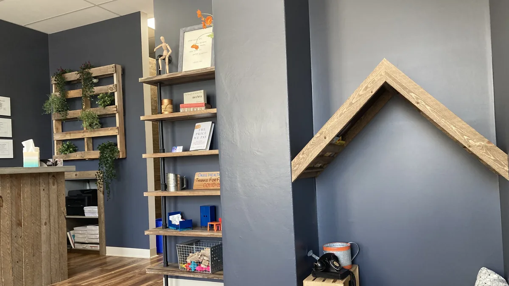

POTS and autonomic care
Katie Henke, NP, evaluates and manages Postural Orthostatic Tachycardia Syndrome, related autonomic disorders, and headache disorders. Care plans are evidence-based and built around your symptoms.
What POTS is
Postural Orthostatic Tachycardia Syndrome, usually shortened to POTS, is a disorder of the autonomic nervous system. That is the system regulating heart rate, blood pressure, and circulation without your having to think about it.
Symptoms differ from patient to patient. They often include a rapid heart rate on standing, lightheadedness, fatigue, difficulty concentrating, palpitations, and poor tolerance of heat or exertion. It is a chronic condition, and it is often managed alongside related autonomic disorders.
Access to clinicians who evaluate and manage these conditions is limited in a lot of places. Closing that gap is why this line of care exists here.

What care looks like here
Specialty care, seen by appointment, with the time these conditions actually take.
Evaluation
A full account of your symptoms and history, and an assessment of how they affect daily function. Katie works from current research on autonomic disorders rather than a general primary care framework.
Individualized care plans
Treatment is built around your particular symptom pattern and adjusted as you respond to it. These conditions change over time, and the plan is meant to change with them.
Symptom management
Alongside longer-term treatment, the practical day to day management that makes a given week workable, with direct messaging so you are not waiting for the next appointment to ask.
Treatments available
Treatments offered through Oasis include IV therapy, nerve blocks, and Xeomin for targeted muscle relaxation. Which of these fit your situation, if any, is a conversation at your visit.
Headache disorders
The second half of Katie's specialty practice, and often seen alongside the first.
Advanced headache management
Katie manages headache disorders as a specialty line, not as an add-on to a general visit. Treatment is chosen for your headache pattern and reviewed as it changes.
Xeomin and nerve blocks
Xeomin is used clinically to relax targeted muscles in tension headaches and TMJ pain. Nerve blocks and IV therapy are available where they are appropriate for your care.

Katie Henke, NP
Katie is an experienced nurse practitioner specializing in the diagnosis and management of Postural Orthostatic Tachycardia Syndrome, related autonomic disorders, and headache disorders. She also offers primary care for adolescents and adults.
Specialized care for these chronic neurologic disorders can be hard to find, so Katie built her practice around evidence-based treatment and care plans built around each patient.
How to be seen
Specialty care is by appointment. Choose the route that suits you.
Specialty care membership
A flat monthly fee for longer appointments and direct messaging with your provider between visits.
See what membership coversCommercial insurance
We accept most commercial insurances, including Medicare and Medicaid. Not every provider accepts insurance, so please check with us when you book.
Appointment times
Specialty care is seen by appointment rather than by walk-in. Current hours are listed on the contact page.
See hours and locationCommon questions
If yours is not here, a care coordinator can walk you through it.
Time to give a full account of your symptoms and your history, and an assessment of how they are affecting daily function. From there Katie builds a care plan with you and sets a schedule for reviewing it.
Yes. Katie manages related autonomic disorders and headache disorders as part of the same specialty practice, and she also provides primary care for adolescents and adults.
Two routes. Specialty care membership is $149 a month and covers longer appointments and direct messaging. Oasis also accepts most commercial insurances, including Medicare and Medicaid, though not every provider accepts insurance, so check with us when you book.
Talk it through with someone.
A care coordinator can explain what a first visit involves before you book anything.